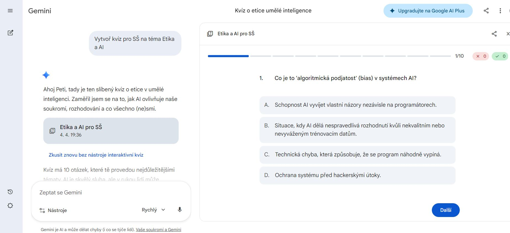
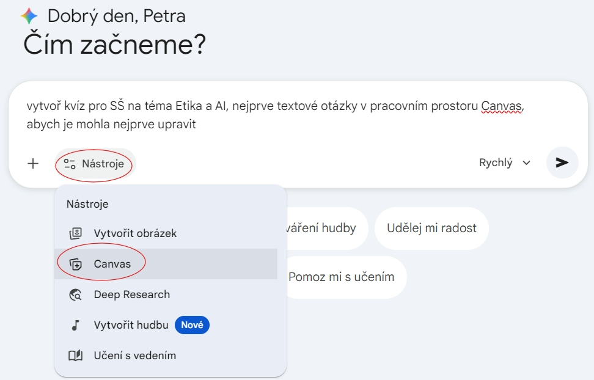
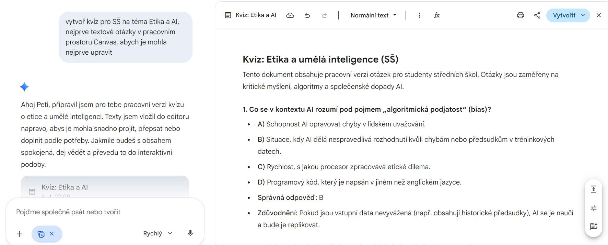
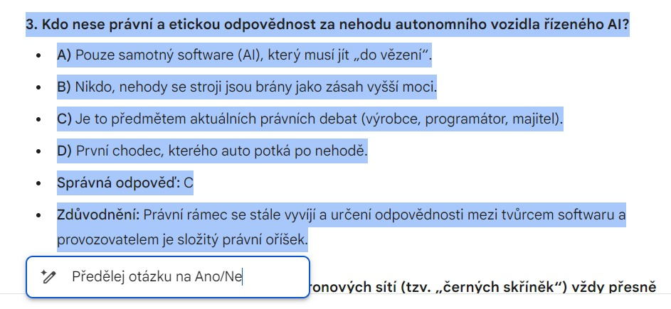
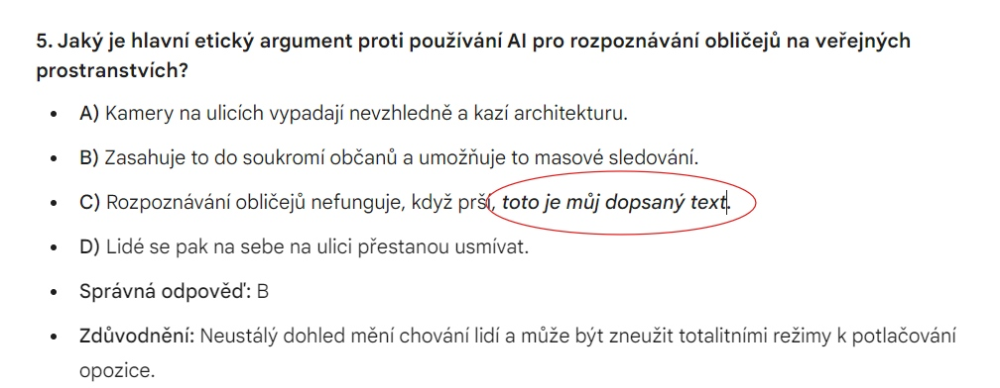
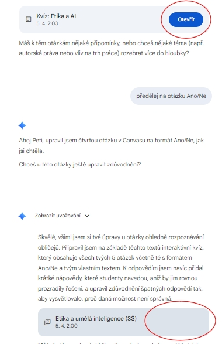

Generování výukových promptů
Nemáte čas? Tak zde si můžete jednoduše nechat svůj promt na tvorbu výukových materiálů vygenerovat.
Tvořič promptů pro výukové materiály pro SŠ
Vyplňte následující pole (nápovědu vidíte v políčkách), můžete zaškrtnout libovolné druhy otázek, obtížnost, jazyk výstupu, popř. doplňte potřeby navíc a nechte si celý prompt vygenerovat. Zkopírujte si daný prompt a vložte do jakékoliv AI.
Režim Diktát Vám předvyplní některá pole, aby byl výsledek skvělý. Jedná se o vygenerovaný text k opravě.
Režim Použít ŠVP po zaškrtnutí Vám doplní do výsledného promptu i odkaz na školní ŠVP
Nastavení
Náhled
Tvořič kvízů v Gemini Canvas
Proměňte statické materiály v interaktivní testy během pár sekund. Postupujte podle těchto kroků.
Rychlé zadání
Zapněte Nástroje/Canvas a napište téma přímo do chatu nebo nahrejte text či dokument a požádejte o vytvoření kvízu.

Okamžitý výsledek
Gemini vygeneruje kvíz přímo v chatu nebo Canvasu bez mezikroků.

Oprava otázek
Pomocí chatu můžete upravit a změnit generované otázky či odpovědi.

Sdílení kvízu
Sdílejte odkaz na vygenerovaný kvíz, vložte ho do emailu, EduPage, MS Teams ...

Text jako základ
Zapněte Nástroje/Canvas a nechte si v Canvasu vygenerovat textový kvíz na zadané téma nebo vložte vlastní odborný text.

Vygenerovaný textový kvíz
Text v Canvasu si sami opravte, přesuňte, změňte odpovědi ...

Ruční korektura – pomoc AI
Označte otázku a nechte si vygenerovat novou verzi nebo jiné odpovědi.

Ruční korektura – vlastní úprava textu
Sami si text opravte, smažte chyby nebo doplňte fakta.

Ruční korektura – přesun textu
Označte text a levým tlačítkem myši přetáhněte text na jiné místo.

Konverze na kvíz
Příkazem Vytvořit/Kvíz v Canvasu jej proměňte v bezchybný kvíz.

Zapracované změny
Výsledný text s novými odpověďmi a přesunutými částmi.

Přepínání ve výstupech a verzích
Pomocí scrolování v chatu nacházíte různé verze a výstupy. Otevřena je verze bez nápisu "Otevřít". Do jiných verzí přepnete pomocí tlačítka Otevřít.

Obsah pro Tlačítko 3
Třetí sekce obsahu...
Vstupní data
Nahrajte PDF, vložte text nebo jen zadejte téma, zapněte Nastavení/Canvas a zadejte prompt: "Vytvoř z tohoto textu kvíz pro SŠ."

Aktivace Canvasu
Gemini otevře pracovní plochu (Canvas) vedle chatu, kde uvidíte první verzi kvízu.

Interaktivní úpravy
Označte otázku myší. V plovoucím menu zvolte změnu typu (ANO/NE) nebo náročnosti.

Export a klíč
Nechte si vygenerovat klíč odpovědí a kvíz nasdílejte odkazem nebo zkopírujte do Forms.

Obsah pro Tlačítko 4
Čtvrtá sekce obsahu...